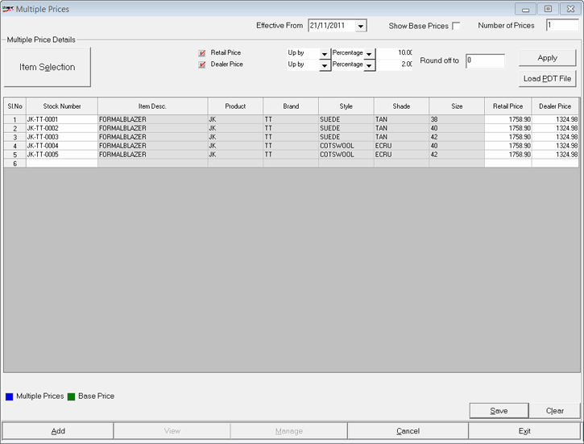

The Multiple Prices window is as shown.

Effective From: Select the date from when the new prices have to be effective.
Show Base Prices: Select to view the prices in item master.
Number of Prices: In case you are setting more than one additional price for an item, enter the number here. A popup window appears where you can enter the computation criteria. Steps for entering the criteria is explained below.
Multiple Price Details
Item Selection: Click to open the Browse window to select the required items. You can select all items without specifying any filter criteria or select some items as per your requirement.
The items that show in the Browse window are based on the system parameter configuration and the class1class2 applicability, if relevant.
Select the required items and click Ok.
Note: Alternatively, you may choose the item details from a PDT file.
You can configure the categories of prices that can be set.
Retail Price/ Dealer Price: The boxes next to the labels are selected indicating that both the prices can be modified. The Revised columns under the respective prices in the grid are enabled for editing.
Note: Whenever you define dealer prices (all items or selected items), retail prices for the selected items are copied from the item master and saved under multiple prices.
Against each price, select the price change criteria as one among Up by, Down by and Fixed from the list on the right. From the next list select either Percentage or Amount by which the price has to be changed and accordingly enter the percentage or amount by which the price has to be changed in the next field. Notice that if Fixed has been selected, then the next list is pre-filled with Amount (i.e., Percentage is not allowed) and the respective price is replaced by the amount specified in the next box.
Note: In case you are setting more than one set of additional prices, you can specify the computation criteria for each set in the popup window.
Round off to: Enter the value to round off to. By default, 0 is displayed.
Load From PDT File: Click to load item details from a PDT file. Click here to learn how to load the details.
Apply: Click to compute the prices and display the values in the grid.
The modified prices as per the criteria you have specified are displayed in the grid. If you want to make further changes to prices of certain items, you may do that in the grid.